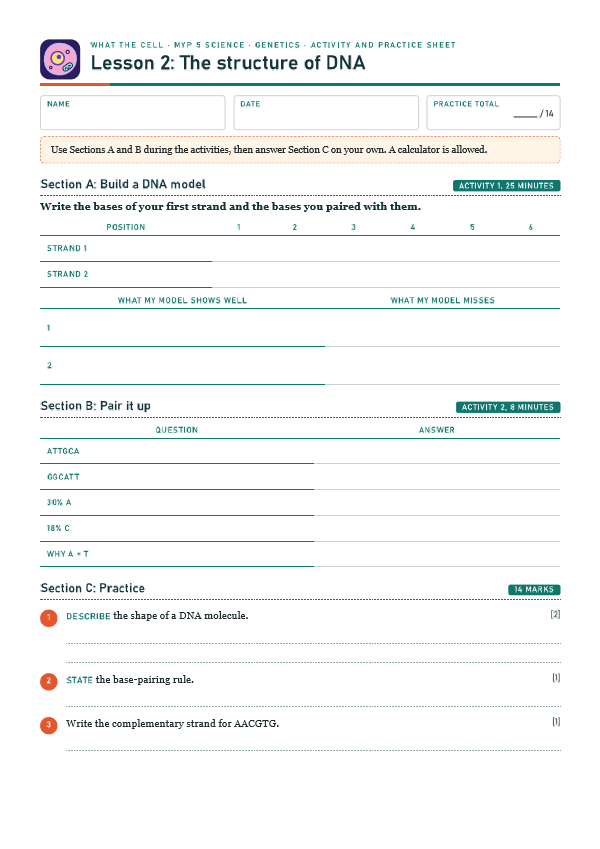

By the end of the lesson you can
- Describe the double helix: two strands joined by pairs of bases
- State the base-pairing rule: A with T, C with G
- Build a model of DNA and evaluate it
- Use base pairing to work out the other strand and base percentages
Keys: arrows or a presentation clicker move the slides, F for full screen. Slides with a red dot have a video or simulation.
Videos (all 5 minutes or less)
- 3:29
What Is DNA
FuseSchool. While you watch: What are the four bases called? Slide 9.
Simulations
- Lab
- Lab
Print and practise

Activity and practice sheet
Used in the lesson’s activities, with practice questions. Your teacher has the answers.
Download (PDF)Lesson 2 slides
All 21 slides in one file, to read again or print. The video buttons on the slides open YouTube.
Download the slides (PDF)Revising? The Revision tab on the unit page has the unit notes and review.
Class activity pack
Everything to print for the lesson’s activities: picture cards, sorting mats, station cards with their kit lists, and the teacher’s set-up notes. Print it before class.
Download the activity pack (PDF)Notes: The structure of DNA
double helix
Two strands of DNA twisted into a spiral, held together by pairs of bases in the middle. For example: like a twisted rope ladder.
complementary
Two strands that match because every A faces a T and every C faces a G. For example: strand ATGC pairs with TACG.
nucleotide
One unit of DNA: phosphate + sugar + base. For example: the beads on a necklace.
deoxyribose
The sugar in DNA; it gives DNA its name: DeoxyriboNucleic Acid. For example: D-N-A.
model
A simplified version of something real that helps us explain and predict. For example: the double-helix model.
replication
Copying DNA: the two strands separate and each is used as a template to build a new matching strand, so both cells get the same DNA. For example: happens before mitosis and meiosis.
Key words
| double helix | two strands of DNA twisted into a spiral |
|---|---|
| base | A, T, C or G: the letters of the code |
| base pairing | A with T, C with G |
| complementary | matching strands, because of base pairing |
| nucleotide | phosphate + sugar + base |
| replication | copying DNA before a cell divides |
| model | a simplified version that helps explain and predict |